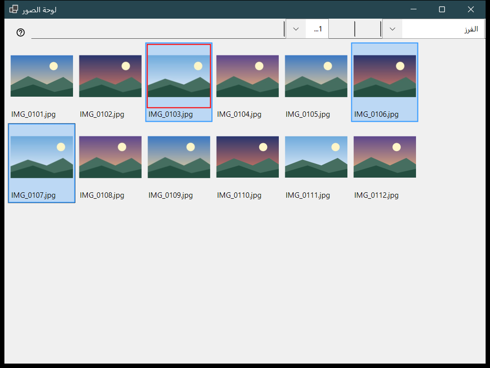
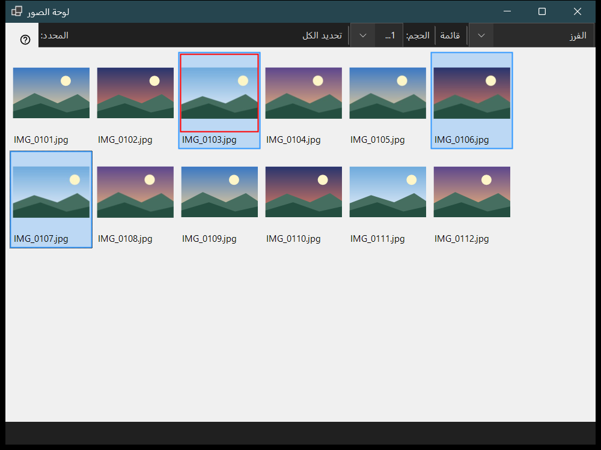

لوحة الصور
الغرض من هذه النافذة
تُفتح لوحة الصور بالمفتاح F3 من العارض، وتعمل بوضعين يُختاران من الحقل وضع اللوحة: الفرز، وهو شبكة صور مصغرة للمجلد الحالي، ومدير الملفات، وهو متصفح بأماكن ومجلدات وأوامر للملفات. لا يغيّر استعراض الملفات وتحديدها وإغلاق اللوحة ما تعرضه النافذة الرئيسية.


بهذا الترتيب
- اضغط F3 في العارض.
- اختر الوضع من وضع اللوحة.
- حدّد الملفات: بالنقر، أو Shift مع النقر لنطاق، أو Ctrl مع النقر لتبديل ملف واحد، أو بسحب إطار.
- في وضع الفرز اضغط 0-9 لنقل التحديد إلى مجلد الوجهة، أو Shift مع رقم من الصف العلوي لنسخه؛ ويتراجع Ctrl+Z عن آخر عملية.
- انقر نقرًا مزدوجًا على ملف أو اضغط Enter لفتحه في النافذة الرئيسية.
- اضغط Esc لإلغاء عملية جارية، ثم Esc مرة أخرى لإغلاق اللوحة.
عناصر النافذة
وضع اللوحة
يبدّل وضع اللوحة بين الفرز ومدير الملفات. يعرض وضع الفرز صورًا مصغرة للمجلد الحالي للنقل والنسخ السريعين؛ ويتصفح مدير الملفات أي مجلد ويقدم أوامر للملفات.
الحجم والتخطيط والتحديد
يحدد شريط التمرير (الحجم:) حجم الصور المصغرة، ويبدّل الزران بلاطات وقائمة التخطيط (Ctrl+L)، ويعرض عدّاد التحديد عدد الملفات المحددة من الإجمالي.
التحديد والفرز
النقر يحدد، وShift مع النقر يحدد نطاقًا، وCtrl مع النقر يبدّل ملفًا واحدًا، والسحب يرسم إطار تحديد. Ctrl+A يحدد الكل، وCtrl+Shift+A يلغي التحديد، وCtrl+I يعكسه، وSpace يعلّم ملفًا، وتتنقل الأسهم وHome وEnd وPgUp وPgDn بين الملفات. تنقل الأرقام 0-9 التحديد إلى مجلد وجهة ذلك المفتاح، وShift مع رقم من الصف العلوي ينسخه، وDel يحذفه، وCtrl+Z يتراجع عن آخر عملية.
التصفية والملفات المخفية
تختار تصفية المحتوى بين ملفات الوسائط أو الوسائط والمستندات أو جميع الملفات، ويُظهر الزر مخفي الملفات المخفية أو يخفيها. يفتح الزر الإعدادات.. نافذة الإعدادات على صفحة مدير الملفات، حيث يُضبط وضع العرض والتصفية والأماكن وترتيب الفرز المحفوظ.
أوامر الملفات
Ctrl+C وCtrl+X وCtrl+V للنسخ والقص واللصق، وF2 لإعادة التسمية، وCtrl+Shift+N لإنشاء مجلد، وDel وShift+Del لحذف العناصر المحددة، وAlt+Enter لعرض الخصائص. يمر النسخ أو النقل بين الموارد عبر هذا الكمبيوتر.
إنشاء ZIP
ينشئ إنشاء ZIP أرشيفًا واحدًا يضم كل المجلدات والملفات المحددة. حذف الأصول معطَّل افتراضيًا، ولا يُسمح به إلا بعد التحقق من الأرشيف ونشره.
استخراج هنا
يعمل استخراج هنا على أرشيف واحد محدد: تُحفظ المجلدات والملفات العادية، ويبقى الأرشيف الأصلي في مكانه، ولا تُشغَّل البرامج المستخرجة أبدًا. يلغي Esc العملية.